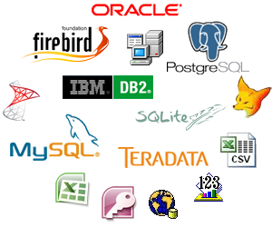
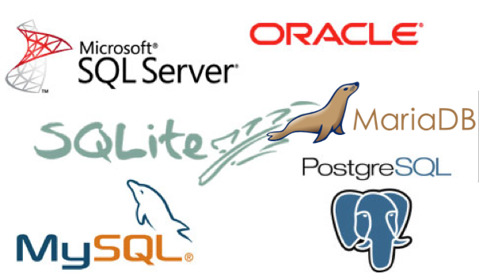
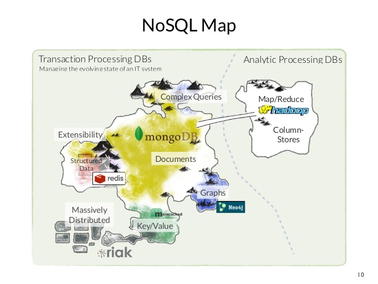
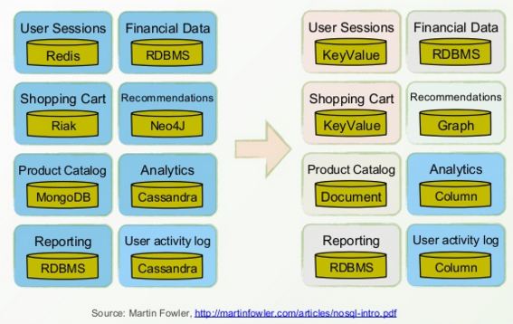
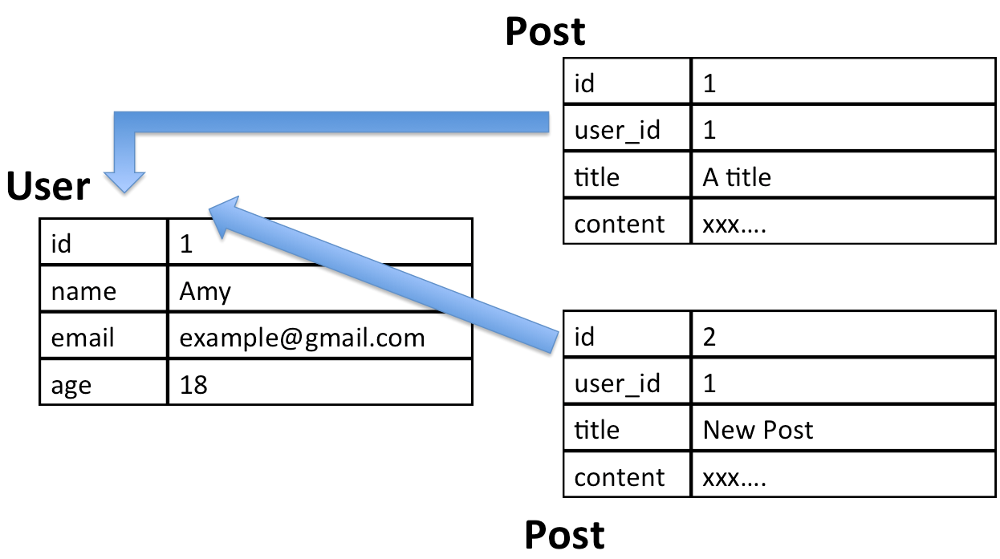
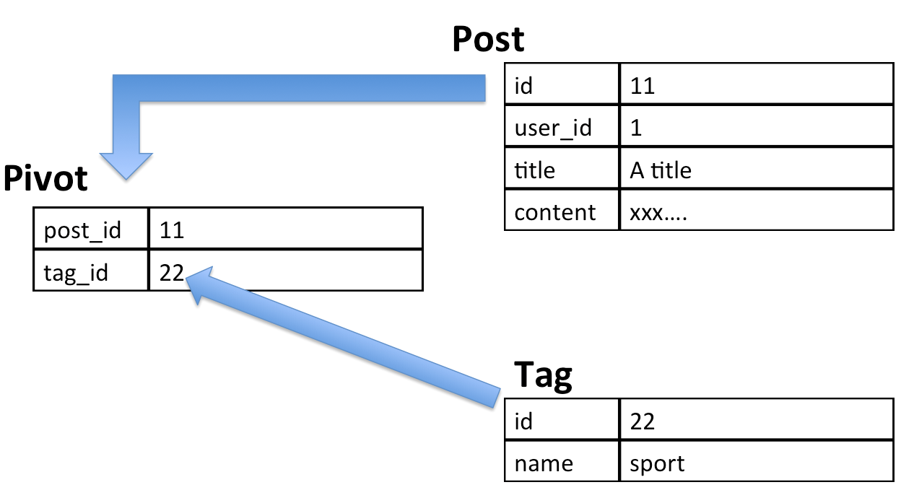

Web Hackathon Seminar
11
database/sql
Database

DBMS
Database Manage System
Database 的發展已經有超過 50 年以上
比較詳細的可以看NoSQL 大腸花
經典款：RDBMS
Relational Database Management System，關聯式資料庫
主流的種類
許多許多的優點
- 資料處理很穩健
- 會使用的人多，資源多易學
- 歷史悠久，長年效能優化
- 可使用 join 等功能，功能性強
有支援 Transaction 的 ACID 特性
- 原子性 (atomicity)：transaction 中的所有操作，要麼全部完成，要麼全部不完成。發生錯誤，會被 rollback
- 一致性 (consistency)：寫入的資料必須完全符合所有的預設規則，包含資料的精確度等等
- 隔離性 (isolation)：當兩個或者多個 transition 同時進行（查詢或修改）資料庫的同一數據時所表現出的相互關係
- 持久性 (durability)：對資料庫所作的改變持久地保存在資料庫之中
但是...
即便長年下來 SQL 衍伸出很多
垂直分割、讀寫分離等等等技術
但遇到某些狀況還是不適合用 SQL 處理..
CAP
- Consistency 一致性
- Availability 可用性
- Partition tolerance 分區容忍
Wiki: 根據定理，分布式系統只能滿足三項中的兩項而不可能滿足全部三項。理解CAP理論的最簡單方式是想像兩個節點分處分區兩側。允許至少一個節點更新狀態會導致數據不一致，即喪失了C性質。如果為了保證數據一致性，將分區一側的節點設置為不可用，那麼又喪失了A性質。除非兩個節點可以互相通信，才能既保證C又保證A，這又會導致喪失P性質。

NoSQL
(Not only SQL)
非關係型、分散式、不提供 ACID 的資料庫設計模式
主要分成
- Document
- Graph
- Key-Value
- Column
- Object

裡面還有一部分是 in-memory database
加了持久化策略也可以提供蠻高的可用性
NoSQL 世界地圖
每個功能模組適用的 database 可能都不一樣
資源：
- Mongodb:Mongo University
- Redis:Try Redis
- Neo4j:Neo4j
Relationship
One to Many
通常會有一個 foreign key 關聯到另一個表的 PK
Many to Many
中間需要有 Pivot Table 記錄兩邊的 PK
THE END
Thanks for listening